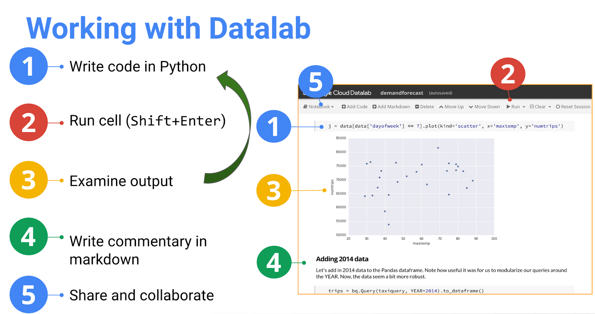
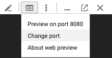
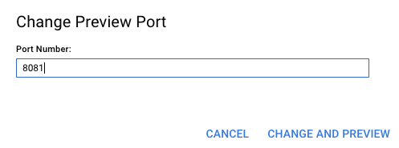

Créer un ensemble de données pour le machine learning avec BigQuery
Présentation
Dans cet atelier, vous allez utiliser BigQuery dans Datalab pour créer une structure de données Pandas de type "dataframe" qui servira de source de données d'entraînement pour effectuer la prédiction de la demande de taxis.
Objectifs de l'atelier
Au cours de cet atelier, vous allez apprendre à réaliser les opérations suivantes :
-
Explorer et visualiser des données avec BigQuery et Datalab
-
Concevoir une structure de données Pandas de type "dataframe" qui servira d'ensemble de données d'entraînement pour le machine learning avec TensorFlow
Introduction
Dans cet atelier et le suivant, vous allez concevoir un système de prévision du niveau de la demande de taxis en utilisant le machine learning. TensorFlow va vous permettre de prévoir votre demande de taxis au quotidien. Pour y parvenir, vous avez d'abord besoin d'un ensemble de données d'entraînement répertoriant les différents facteurs qui influent sur le niveau de demande de taxis (les "éléments d'entrée") ainsi que le niveau de demande réel (la "cible") des jours précédents. Vous allez vous servir de ces données pour former un réseau de neurones capable de prévoir le niveau de demande des jours à venir, à l'aide des éléments d'entrée dont il dispose.
Dans cet atelier, vous allez utiliser BigQuery dans Datalab pour concevoir un ensemble de données que nous utiliserons dans le prochain atelier pour le machine learning.
Configuration
Tâche 1 : Lancer Cloud Datalab
Pour lancer Cloud Datalab, procédez comme suit :
-
Dans Cloud Shell, saisissez ce qui suit :
datalab create bdmlvm --zone us-central1-a
Le lancement de Datalab prend environ cinq minutes.
Remarque : Suivez les instructions à l'écran pour cette étape.
Si vous ne connaissez pas Datalab, voici un aide-mémoire qui résume ses fonctionnalités principales :

Tâche 2 : Consulter le bloc-notes dans Cloud Datalab
Remarque : Si nécessaire, patentiez jusqu'à la fin du lancement de Datalab. Vous saurez que l'outil est prêt à l'emploi lorsque l'instruction "Web Preview" (Aperçu sur le Web) s'affichera.
-
Cliquez sur l'icône Aperçu sur le Web (Aperçu sur le Web) dans l'angle supérieur droit du ruban Cloud Shell. Cliquez sur Modifier le port (Modifier le port). Choisissez le port 8081 dans la boîte de dialogue Modifier le port d'aperçu (Modifier le port d'aperçu), puis cliquez sur Modifier et prévisualiser (Modifier et prévisualiser).


Remarque : Vous restez connecté à votre instance Datalab tant que la commande datalab est active. Si l'instance Cloud Shell utilisée pour l'exécution de la commande datalab est fermée ou interrompue, vous êtes déconnecté de votre VM Cloud Datalab. Le cas échéant, essayez de vous reconnecter à l'aide de la commande datalab connect bdmlvm dans une nouvelle instance Cloud Shell.
-
Dans l'angle supérieur droit du ruban Datalab, cliquez sur l'icône Open ungit (Ouvrir ungit).

-
Dans la fenêtre Ungit, supprimez notebooks dans le nom /content/datalab/notebooks de manière à obtenir le nom de chemin suivant : /content/datalab. Appuyez ensuite sur Enter.

-
Dans le panneau qui s'ouvre, indiquez à partir de quel dépôt GitHub effectuer le clonage. Pour ce faire, saisissez l'adresse suivante dans le champ Clone from (Cloner à partir de) :
https://github.com/GoogleCloudPlatform/training-data-analyst
-
Cliquez sur Clone repository (Cloner le dépôt).
Tâche 3 : Ouvrir un bloc-notes Datalab
-
Dans le navigateur Datalab, accédez à training-data-analyst > CPB100 > lab4a > demandforecast.ipynb.
-
Lisez le commentaire, cliquez sur Clear | Clear all Cells (Effacer | Effacer toutes les cellules), puis exécutez chaque extrait de code Python dans la cellule, un par un, à l'aide du raccourci clavier Shift+Enter.
-
Arrêtez-vous lorsque vous arrivez à la section Machine Learning with Tensorflow (Machine Learning avec TensorFlow) : il s'agit de l'atelier suivant.
Dernière mise à jour du manuel : 09 octobre 2018
Dernier test de l'atelier : 09 octobre 2018